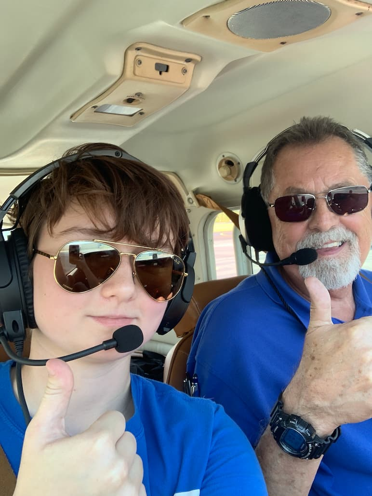
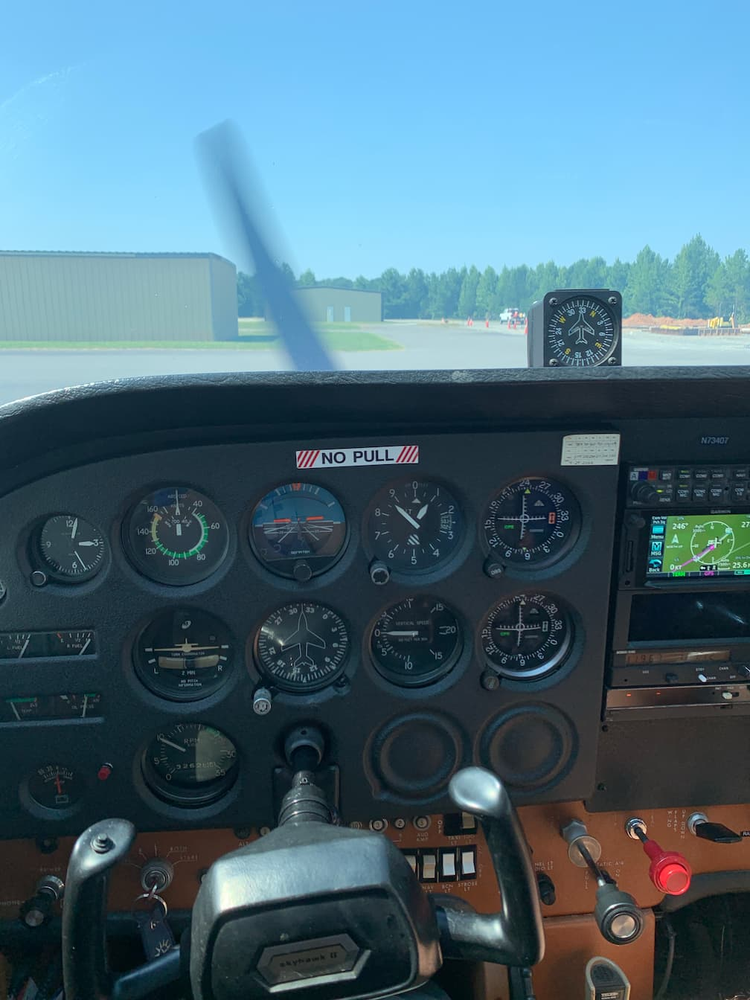
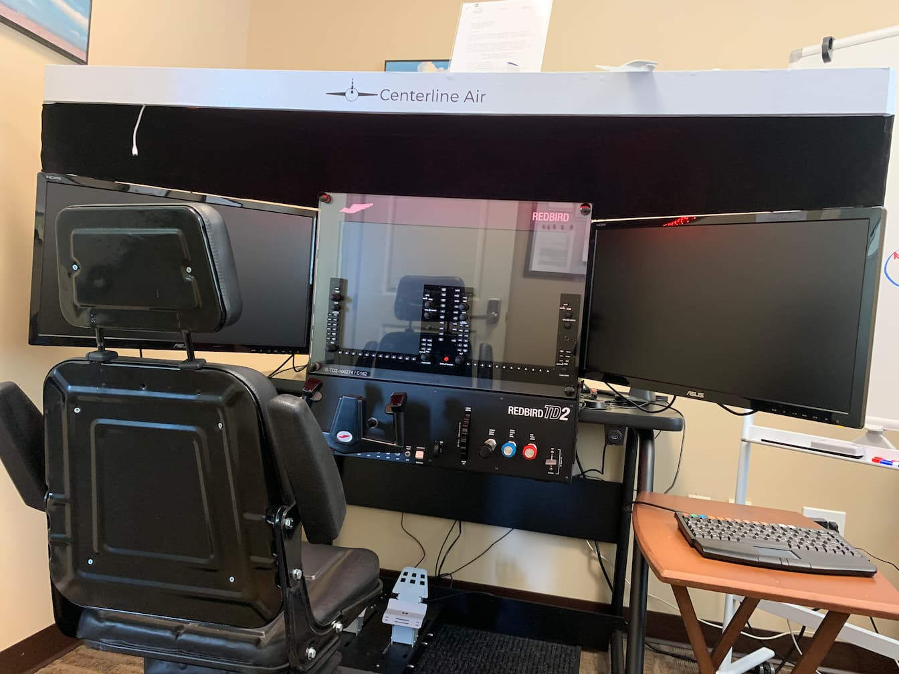
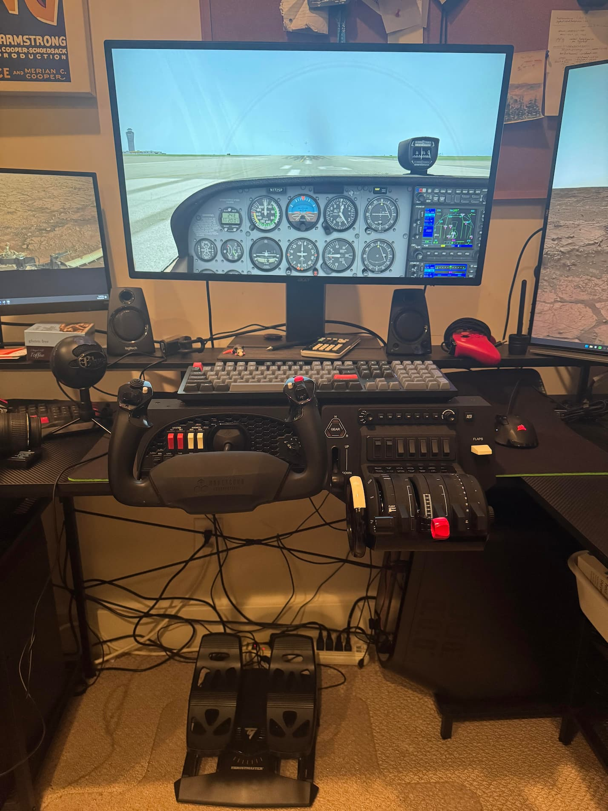

Home
Flying airplanes and flight simulators is a challenging hobby that requires a lot of concentration and precision. I enjoy hobbies that help me to improve myself and learn skills that I can apply in other areas of life.

Flight simulators are a fun, low-cost, and low-stress way to practice flying and have fun with different airplane models without having to worry about renting equipment, paying instructors, and safety.
About Me
I have been interested in flying airplanes and flight simulators since I was 14 years old. I first flew a plane at 15 years old, before I had my drivers' license. I have a student pilot license, which means that I can fly a plane as long as I'm supervised by an instructor(either from the copilot seat or from the ground). I haven't been in the pilot's seat of a real plane in a while now due to being busy with school, but I enjoy "flying" my flight simulator quite often.
In addition to flying planes in X-Plane, I sometimes use my flight simulator equipment to fly airplanes in video games. While this may not be the most realistic practice, I think it has helped me improve my situational awareness.

Times and Seasons
My favorite time of year to fly is winter. Smaller planes like the ones student pilots fly often don't have good heat or air conditioning systems, and I much prefer the cold over the heat. Although, when you get to a certain altitude, the air becomes much cooler and it doesn't matter as much.

Flying at night is vastly different than flying during the day. When visibility is low, pilots have to rely on the plane's instruments, rather than their own vision. This can make navigating much more difficult.
Places
Finding a good flight school can be difficult, especially in a busy airspace like Charlotte. Flight students typically start out in rural areas, where airports are calm.
A major benefit of flight simulator technology is that it allows people to practice flying anywhere. Mine is in my home office, which allows me to practice whenever I like. Some flight sim setups are so advanced that pilots are allowed to log hours piloting them as if they were piloting a real plane.

What equipment do you need?
Airplanes and flight lessons are pretty expensive, but a flight simulator is a little more beginner friendly. Through the use of a simulator, you can practice flying from the comfort of your own home. If you aren't sure flying is for you, you can start off with a cheap joystick or game controller, or even a mouse and keyboard. However, more advanced equipment allows for a more realistic simulation.

Even on the most basic aircraft, controls are complex. The slideshow below includes more detailed images of each piece of equipment in my simulator setup.
Why
Flying offers a unique experience. There is nothing that quite compares to the freedom of flight.

One thing my flight instructor said to me has stuck with me for a long time. He said that his students usually get up in the air and look down at the tiny houses and ant-like cars, and find that they either feel very big, or very small.
Use of AI
Due to the complexity of flight controls and airplanes, I elected not to use AI in any of my images. I made this decision because I deeply appriciate the intricate equipment and machinery involved in airplanes, and I would like to keep my images as accurate as possible. This propably made the creation of this webpage more difficult than it had to be, but I enjoyed taking photos of my setup. All of the images on this webpage are my own, except one sourced from unsplash.com, a free image website.
AI prompts for html and javascript:
- Help me write html and javascript to insert a slideshow of images into a webpage
- I have a webpage that uses <section> to separate content. Help me write javascript to keep these sections hidden until they are selected.